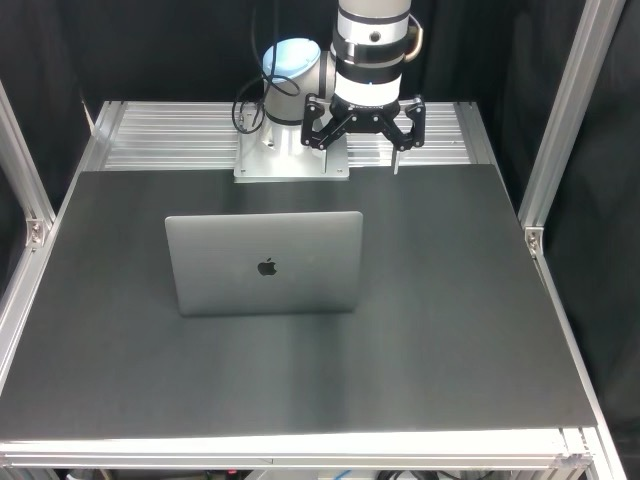
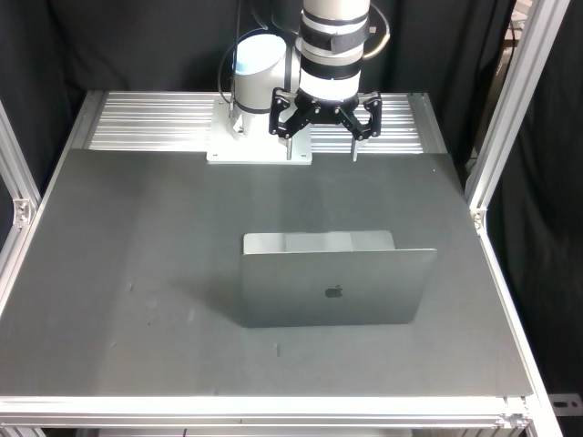
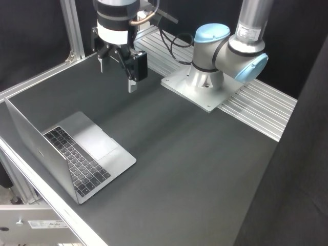
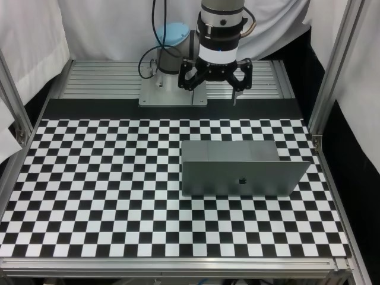
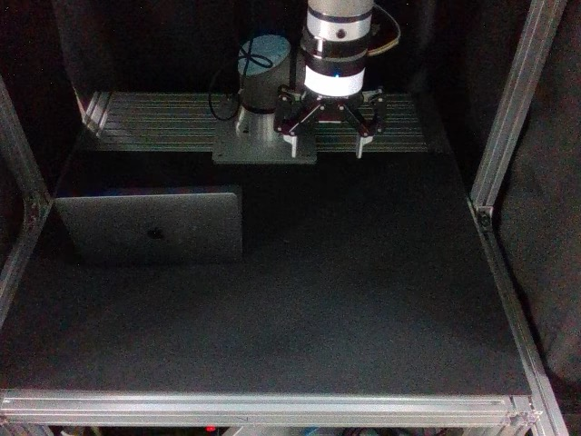
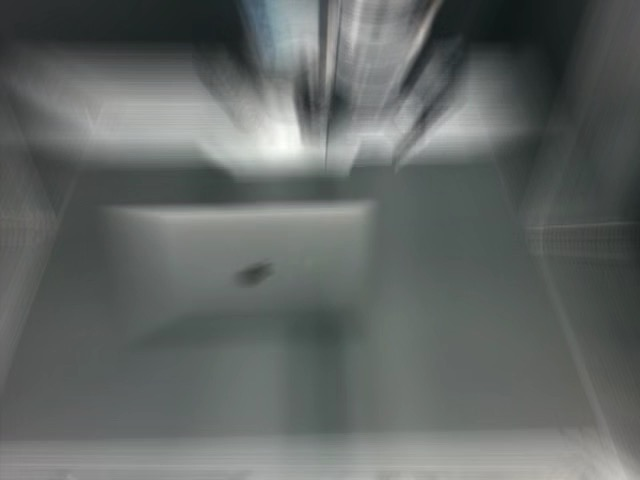

1OpenMind, San Francisco, CA, USA2Seoul National University, Korea
3Ajou University, Korea4Tommoro Robotics, Korea5Hyundai Motors, Korea
What DILL can do
Same task. Different visual conditions.
DILL helps robots stay on task when the visual world changes.
Training

Training condition
→
DILL evaluation · “Close the laptop.”

Original (no perturbation)

Viewpoint

Background

Lighting

Noise
Visual robustness
Visual shifts can sharply reduce success.
DILL limits that drop by learning task-relevant features while suppressing task-irrelevant visual cues.
Success-rate drop ↓
OpenVLA
−61.8 pp
WorldVLA
−61.2 pp
UniVLA
−52.3 pp
OpenVLA-OFT
−37.6 pp
DILL (ours)
−12.5 pp
LIBERO+ benchmark
DILL, in a nutshell
VLA models can confuse visual context with the task itself. Domain-Invariant Latent Lookahead (DILL) trains them to predict task-relevant future representations while separating out domain-specific cues. This reduces shortcut behavior and improves robustness to visual changes.
The shortcut problem
Following the instruction—or the viewpoint?
When camera view and task always appear together, a robot can learn the wrong association.
Training · View and task are correlated
Right view“Put the red die in the basket.”Left view“Put the blue die in the basket.”
Test → Change the instruction
Right view“Put the blue die in the basket.”Chooses the red die instead.
The shortcut: using the camera view to decide which die to pick, instead of following the instruction.
60%of the time, even a strong model like π₀ chooses the wrong object.
The key idea
How can a VLA learn what matters?
Look to the future.
Future observations reveal how objects move and how a task progresses—rich signals for learning task-relevant features.
But not every future feature matters.
Raw future images and entangled visual latents also preserve the camera view, background, and other incidental details.
The question is not simply whether a VLA should predict the future, but what representation of the future it should predict.
Pretrain a Task-Domain Encoder to separate task-relevant features from viewpoint, background, and other domain cues.
Pretrained on domain-transformed trajectories from ManiSkill, MimicGen, and a subset of Open X-Embodiment.
02
Shape the VLA’s action representation.
During policy training, predict future task latents and disentangle the current representation from domain latents. Both the current representation and predicted lookahead guide the action head.
Future observations provide training supervision only. At inference: current observation + instruction.
What changes?
Fewer shortcuts.
Illustrative shortcut: asked for blue, selects red.
Shortcut behavior ↓
73%Base VLA
→
5%Base VLA + DILL
DILL is less likely to follow the task associated with a camera view instead of the commanded task.
Real-world robustness
Succeed under visual conditions that differ from training.
DILL rollouts under familiar and perturbed visual conditions.